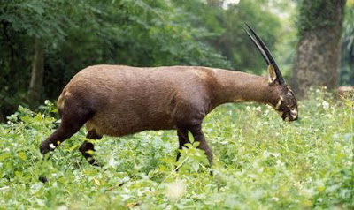

The Saola- An Asian Unicorn!

The Saola has been referred to as the Asian unicorn because it is so
rare and seldom seen. It is also Critically Endangered, with no more than
several hundred individuals remaining in several isolated areas of
tropical forest stretching along the border between Vietnam and Laos.
Related to cattle but resembling an antelope, the Saola—brown with white
patches on its head and face and sporting a pair of straight,
spindly horns—can grow to a height at the shoulders of a little over
three feet (one meter), and a weight of up to 220 pounds (100 kilos).
The Saola was first discovered in 1992, and since then has been seen
only a handful of times, even by researchers who were looking very hard.
In fact, until late 2013 when a camera trap in Vietnam took photos of
a single animal, no live Saola had been spotted for 15 years.